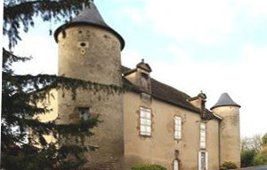
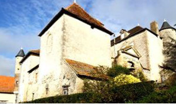
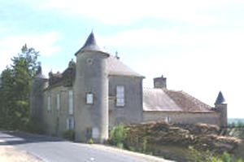
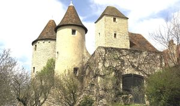
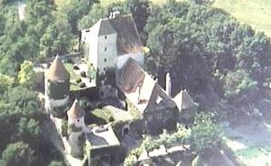
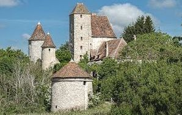
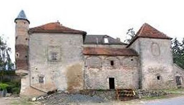

Recensement Jean-Claude Truffet
| Département | 03 — Allier |
| Canton | Jaligny-sur-Besbre |
| Commune | Cindre |
| Type d'édifice | Château |
| Période d'origine | XV-XVII |







Plusieurs châteaux à Cindré, dont celui de Cindré du XIII-XVIIIe siècle tour carrée, de Fontaine du XVI-XVIIe siècle, du Gd-Montet du XVIIIe siècle, de Grouge du XVIIe siècle, du petit-Chambord du XVIIe siècle et de Puyfol du XV-XVIIe siècle donjon avec deux tours rondes. CINDRE fait partie des fiefs pour lesquels Hervé, comte de Nevers, rend hommage en 1217 à l'évêque de Clermont. GROUGE, construit au XVIIe siècle par la famille Bergeron. Au XVIIIe siècle, le château de Grouge passera par mariage aux Ménudel, et ensuite aux Prevéraux-Bertucat qui le vendent vers 1750 à G. Joulle, seigneur de Chambord, dont les descendants le conservent jusqu'au début du XXe siècle.
GRAND-MONTET, cette terre est une dépendance de l'abbaye de Sept-Fons. Les archives de Gayette (Montoldre) font apparaître que les religieux de cet hospice devaient, au XVIIIe siècle, plusieurs cens à ceux de Sept-Fons pour les terres qui dépendaient du fief du Grand Montet.
PETIT CHAMBORD a été le siège d'une seigneurie primitive. La demeure a été acquise en 1642 par Jean-François de Chambord, ce qui lui vaut certainement l'appellation de Petit Chambord. La famille a conservé les lieux jusqu'à la fin du XVIIIe siècle, où l'on rencontre Claude Devaulx de Chambord, en 1779. Aujourd'hui ferme et chambres d'hôtes de Véronique et François Léval. PUYFOL, au XIIIe siècle, appartient à Jean de Villars, vassal du seigneur de Montaigu le Blin. Le château sera ruiné par les anglais en 1367, lorsque ceux-ci seront chassés par le duc de Bourbon après son retour de captivité. Regnaude de Villars porte Puyfol par mariage à la famille Saulnier, au XVe siècle, le conserveront jusqu'au début du XVIe siècle, puisqu'en 1503 ce sont Aymé et maître Jacques Saunier qui font aveu à la duchesse de Bourbon. On trouve ensuite Jean de Breules, chambellan du duc d'Alençon, habitant à Puyfol. Puis, à partir de 1606 et jusqu'à 1700, passe aux d'Albost qui le vendent à Claude de Chazerat. Il est acheté en 1730 par M. Hautier de Villemontée, seigneur de Trezelle. Par mariage il revient l'année suivante à la famille de Viry du Coude qui le cède en 1776, à J. P. de Fontaines de Trocézard, guillotiné en 1794, Puyfol saisi et vendu comme bien national. Le château est revendu à de nombreuses reprises, et est acquis en 1923 par la famille Ispenian.
Cindre, datant du XVIIIe siècle. Le donjon (XIIe siècle) s'est écroulé le 8 août 1908. C'était cependant un édifice remarquable qu'il convient de signaler. Grand-Montet, bâtiment du XVIIIe siècle au plan en U. Le rez-de-chaussée est posé sur une base assez haute et fortement tallutée. Depuis le Sud, l'impression d'élévation est importante. Grouge est un bâtiment de plan rectangulaire, flanqué d'une tour-pigeonnier circulaire à l'angle Nord-Ouest, et en façade d'une tour rectangulaire d'escalier. Fontaine, le château de la fin du Moyen-Age, fût remanié de style Renaissance, flanquée de deux tours circulaires, fermé sur le côté d'une cour à laquelle on accède par un portail d'ordre dorique daté de 1691.
Petit Chambord, détruit par les anglais pendant la guerre de Cent Ans, le château sera reconstruit à la fin du XIVe siècle sur l'éminence naturelle qu'il occupait déjà. Probablement ancienne maison forte, installé sur l'emplacement d'une motte féodale. Les bâtiments anciens, qui ont été restaurés, forment un long corps de logis à rez de chaussée et combles élevés, auquel sont adossés deux appentis. Un second de bâtiment, construit au XVIIe, a été disposé en équerre, c'est une sorte de gros pavillon rectangulaire, à deux niveaux, coiffé d'un toit à croupes. Puyfol, Détruit par les Anglais pendant la guerre de Cent Ans, le château sera reconstruit à la fin du XIVe siècle sur l'éminence naturelle qu'il occupait déjà, les bâtiments qui restent se regroupent autour d'une cour rectangulaire présentant deux niveaux différents. Les plus anciens comprennent le donjon et sa tourelle d'escalier et deux tours rondes, le bâtiment du XVe siècle comprend au 1er étage une salle voûtée en arête sur fortes nervures. L'escalier à vis avec marches en pierre tracées sur un diamètre assez grand, une petite tourelle d'angle reposant sur un joli cul-de-lampe le continue par des degrés plus étroits.
Famille Bergeron"
Château de Cindré, de la pouge, de Fontaine, le Petit Chambord et Puyfol